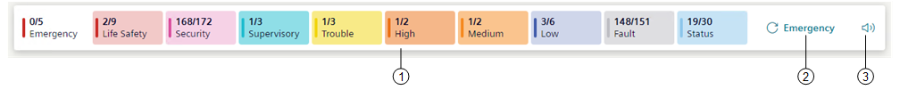
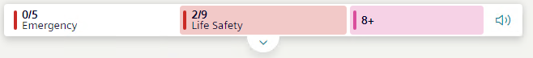

Summary Bar
In Flex Client web/desktop app, the Summary bar is located below the horizontal navigation bar, and has a series of event lamps, which provide an overview of the events in the system, grouped by category.

1 | Event lamps | Summarizes the events in the system, grouped by categories (see Event Lamps). |
2 | Re-sound notification | The audio alert ceases when the incoming events have been acknowledged and it will resume after 24 hours if a previously-acknowledged event has still not been fully processed (closed) by then. In case of multiple events, the sound and the notification will be the one for the most important (severe) event category, irrespective of any filters or sorting you may have applied to Event List. For instructions see, Controlling the Buzzer. |
3 | Buzzer | The buzzer is the sound emitted by a client station to notify the operator of events in the Flex Client application. When a new event occurs, the client station emits an audio alert that continues for as long as that event remains unprocessed (that is, unacknowledged by the operator). For instructions see, Controlling the Buzzer. |
Depending on the Flex window size, you can also change the height of the Summary bar. For instructions, see Reduce or Expand Summary Bar Height.
Furthermore, Summary bar is also optimized for different mobile devices and screen sizes.

For more information about Summary bar on small screen devices (576 pixels or lower), see Use Summary Bar in Mobile Flex.
Regardless of the screen size, lamps with events of the highest severity are always visible. In particular:
- One lamp in Flex Client web app
- Two lamps in Flex Client desktop app